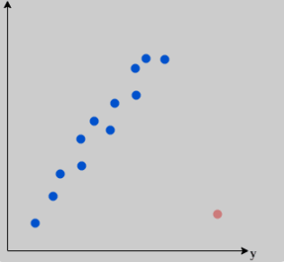
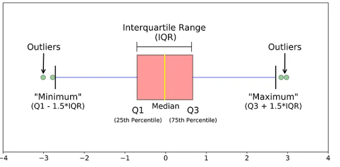

OUTLIER DETECTION IN PYTHON
Graphical methods for outlier detection
Outliers are difficult to detect by a “naked” eye unless you are analyzing data about which you have great field expertise. Fortunately, there are some visualization tools that can help with this task. The most common are histograms, box plots and scatter plot. We will see an example of each one.
-
Histogram - is among commonly used plot to quickly check the presence of outliers in the data set.
In the histogram, the data is divided into a pre-specified number of groups called bins. The data is
then sorted into each bin and the count of the number of observations in each bin is retained.
The plot shows the bins across the x-axis maintaining their ordinal relationship, and the count in
each bin on the y-axis.
An isolated bin which appears on the left or right of the central bins causing negative or possitive skew respectively can be seen as a possible outlier.
A histogram can be created using the matplotlib function in Python which by default estimates the
number of bins from the data sample.
See the code snippet for drawing histogram to check the presence of outliers in the selected numerical variables in
the data.
# For multiple histogram with density curve fig, (ax1, ax2) = plt.subplots(2, figsize=(10, 12)) # Creating subplots with 2 rows and 1 column sns.histplot(data=breast_cancer, x="perimeter_worst", kde=True, color="blue", ax=ax1) # , ax=axs[0, 0] sns.histplot(data=breast_cancer, x="area_worst", kde=True, color="purple", ax=ax2) #, ax=axs[0, 1] sns.set_theme(style="darkgrid") plt.suptitle("Histogram for perimeter worst and area worst",color = "red") fig.tight_layout() # Showing more data points plt.show()Conclusion - There seem to be outliers in both "perimeter worst" and "area worst" variables. Both outliers seem to be on the right side making the data to be positively skewed. "Area worst" variable seem to have more extreme outlier(s) as the tail is longer and the bar is far much isolated from the central bars.
-
Box Plot - or boxplot (also known as a box and whisker plot) is a type of chart
often used in explanatory data analysis. Box plots visually show the distribution of numerical data
and skewness by displaying the data quartiles (or percentiles) and averages. It is the easiest way yo grasp valuable information about your data's outliers.
Before checking the outliers for the variables, let's understand the components of outliers.
From the above figure;
- Q1 - First quartile/ 25th percentile, 25% of data is below this point.
- Median - It is like second quartile/ 50th percentile, but we usually don't call it second quartile, instead median. It is the central value of the data set. 50% of the data is below this point.
- Q3 - Third quartile/ 75th percentile, 75% of the data points is below this point.
- Minimum - The data point with the smallest value in the data set that isn’t an outlier.
- Maximum - The data point with the largest value in the data set that isn’t an outlier.
- IQR - Interquartile range, Represents all the values between Q1 and Q3.
- Outliers - The value below minimum value of the data set (outlier is, "<'Q1-1.5*IQR") or above the maximum value of the data set, (outlier is, ">Q3+1.5*IQR").
# Box plot with matplotlib perimeter_worst = breast_cancer["perimeter_worst"] area_worst = breast_cancer['area_worst'] columns = [perimeter_worst, area_worst] fig, axe = plt.subplots() box = axe.boxplot(columns, notch=True, patch_artist=True) plt.xticks([1, 2], ["perimeter_worst", "area_worst"]) colours = ['#0000FF', '#00FF00'] # for patch, colour in zip(box['boxes'], colours): # patch.set_facecolour(colour) plt.title("Boxplot for perimeter worst and area worst", color = "red", fontsize = 15) plt.semilogy()Conclusion - Just by looking at the BoxPlots, we can see that the variables 'perimeter worst' and 'area worst' have outliers. The variable 'perimeter worst' has some outliers in the upper bound, and the variable 'area worst' has more and far outliers in the upper bound, which suggests a skewed distribution. The result is similar as the ones we have seen with histograms.
-
Scatter plot - Scatter plot shows the joint outliers in two variables.
It helps in identfying possible multivariate outliers, for example, we expect the area worst and perimeter worst to be in limits for all the cancerous breasts, just like the height and weight of an individuals in our introduction. The area worst might not be an outlier and perimeter worst might not be an outlier, but their combination can be an outlier.
See the code snippet for drawing scatter plot to outliers in selected numerical variables of
our data.
# Create scatter plot with plotly express (px) fig = px.scatter(breast_cancer, x="perimeter_worst", y="area_worst") fig.show()Conclusion - As very clearly visible in the graph, the 'area worst' variable is concentrated more within the range of 0–3000. Similarly, most of the 'perimeter worst' is below 200 The points above 4000 for 'area worst' and above 250 for 'perimeter worst' are very likely to be outliers as these can result to disproportionate stats about the overall structure of the data.
About the Author
Galm Dida - Training coordinator (Consuldata and Research Centre) - I am passionate of driving insight from data to help business make informed decision to increase productivity and reduce risk. Currently supporting over 30 students in the country and beyond in learning data tools and applications to support business decisions. Join us as we create data community and solve problems through insights.
Contact
Tell: 0741370493 || email: Send me an email || whatsapp: WhatsApp Me
Quick links
Learn Normality test in Python
Learn what to do if your data deviate from normality
Coming up
In our next blog, we will be discussing "Hypothesis testing for outlier detection"